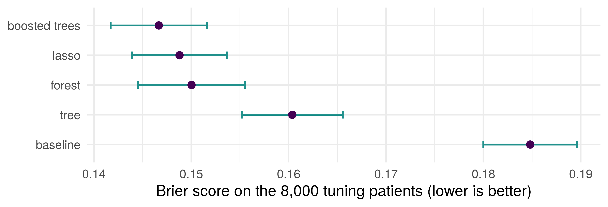
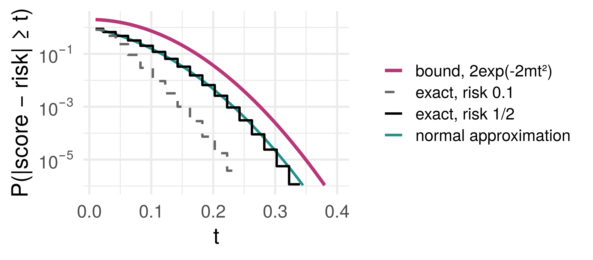
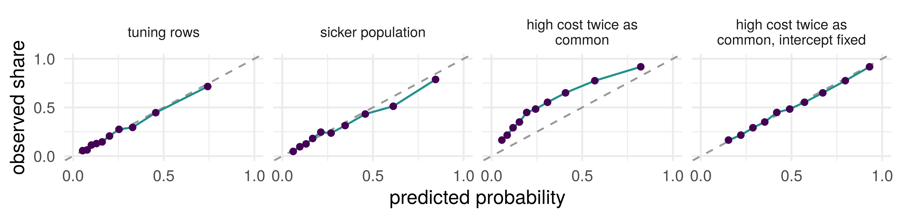
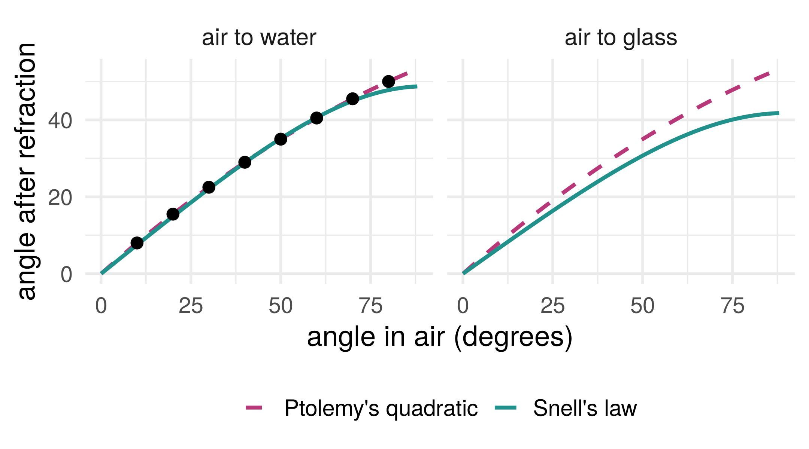
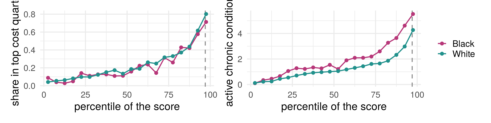

Week 10: evaluation, distribution shift and deployment
Prediction competition: curated data, the same for every competitor; a task; an agreed score; an evaluation dataset the competitors cannot see. Winning model chosen by best score
The Netflix prize went to a blend that was never put into production
Winning a competition is not always useful
Today, what a winning score does and does not tell us:
Part 1: the leaderboard
Part 2: when the data move
Part 3: scores and decisions
Obermeyer et al. (2019) studied a commercial algorithm that a US health system used to predict patients’ costs, and released synthetic rows that mimic their data: 48,784 patient-years (5,582 Black, 43,202 White)
Split once at random: 16,000 training, 8,000 tuning, 12,000 test, 12,784 kept back for later

The four models with any structure are within 0.014 of each other, and every bar is about 0.010 wide
The two leaders’ bars overlap. Their scores come from the same 8,000 patients. Can those patients still tell the two models apart?
Score each patient twice and take the difference, \(\Delta_j = \ell\big(y_j, \hat p_A(x_j)\big) - \ell\big(y_j, \hat p_B(x_j)\big)\)
boosted trees minus lasso: \(\bar\Delta = -0.0021\), standard error 0.0008, against 0.0025 for one score alone
The pair to compare on the test rows: boosted trees against lasso, chosen now
A score is a mean of \(m\) losses, \(\hat R = \frac1m\sum_j \ell_j\), with mean \(R\), the risk
A loss between 0 and 1 has variance at most \(\frac14\), so \(\mathrm{Var}(\hat R) \le \frac{1}{4m}\)
If \(\hat R\) were normal with that variance: \(P\big(|\hat R - R| \ge t\big) \le 2e^{-t^2/(2\sigma^2)}\) with \(\sigma^2 = \frac{1}{4m}\), which is \(2e^{-2mt^2}\)

\(m = 50\) losses of 0 or 1
The central limit theorem makes the normal shape plausible, but does not control the far tail at a fixed \(m\)
Hoeffding’s inequality (stated). If \(Z_1, \ldots, Z_m\) are independent with \(0 \le Z_i \le 1\) and \(\bar Z\) is their mean, then for every \(t > 0\) and every \(m\), \(P\big(|\bar Z - \mathbb E\bar Z| \ge t\big) \le 2e^{-2mt^2}\)
Why it holds for every \(m\):
\(K\) models fixed in advance, by the union bound: every score within \(t_K = \sqrt{\log(2K/\delta)/(2m)}\) of its risk, with probability \(1 - \delta\). Here \(t_K = 0.018\): gaps above \(2t_K\) are resolved for 1 of the 10 pairs, against a paired standard error of 0.0008
Decided before opening: boosted trees against lasso, the paired difference with two standard errors
| boosted trees | lasso | difference ± 2 SE | |
|---|---|---|---|
| tuning | 0.147 | 0.149 | -0.0021 ± 0.0015 |
| test | 0.145 | 0.147 | -0.0023 ± 0.0012 |
The selected candidate’s score is biased low: the winner of \(K\) noisy scores was partly lucky. A test set scored once, for models fixed before it is opened, has no such bias
The leader scored 0.147 on the tuning rows and 0.145 on the test rows: with \(K = 5\) and \(m = 8{,}000\), no sign of the bias
A program can enroll only the 3% with the highest scores. Of those 360 test patients, the share with top-quarter cost is 84.7% for boosted trees and 82.5% for lasso
Which patients are in the top 3% depends on every patient’s score. This number is not an average of per-patient losses. What replaces \(\mathrm{sd}/\sqrt m\)?
Bootstrap the test rows: draw \(m\) rows with replacement, recompute the difference, repeat \(B\) times, and read off the spread. Each drawn row keeps both models’ predictions, so the comparison stays paired
90% bootstrap interval for the difference: -0.6 to 5.3 percentage points, so this number does not separate them. The models are held fixed: the interval says nothing about refitting, and nothing about how the pair was chosen
Adaptive drift (stated). If the candidates depend on earlier scores on the same rows (tune, look, tune again), the union bound no longer covers them, and the score can be driven away from the risk. A test set scored once, for models fixed before, does not move
Recht et al. (2019) built new test sets for CIFAR-10 and ImageNet to the original recipe. Accuracy fell for every model, many by about 10 percentage points (the best ImageNet model in their Table 1 from 82.9% to 72.2%), with the order of the models almost unchanged. They split the drop into three gaps:
\[ \hat R_{\text{old}} - \hat R_{\text{new}} = \underbrace{\hat R_{\text{old}} - R_{\text{old}}}_{\text{adaptivity}} \;+\; \underbrace{R_{\text{old}} - R_{\text{new}}}_{\text{distribution}} \;+\; \underbrace{R_{\text{new}} - \hat R_{\text{new}}}_{\text{sampling}} \]
and found it was mostly the distribution: slightly harder images. On 120 Kaggle competitions, public and private leaderboards agreed closely (Roelofs et al. 2019)
Fit to 142 countries in 2002, tested on the same countries in 1997: has it predicted anything new?
Built from the patients kept back: a sicker population (kept with a probability rising with last year’s chronic conditions), and one with high cost twice as common (every high-cost patient kept, a third of the others)
| Model | Tuning rows | Sicker population | High cost twice as common |
|---|---|---|---|
| boosted trees | 0.147 | 0.164 | 0.235 |
| lasso | 0.149 | 0.165 | 0.244 |
| forest | 0.150 | 0.165 | 0.255 |
| tree | 0.160 | 0.178 | 0.261 |
| baseline | 0.185 | 0.212 | 0.305 |
The new patients’ costs are not known yet. What is a model’s risk on them?
\(p_{\text{test}}\): where the model will be used. \(r(x) = \mathbb E[\ell(Y, f(X)) \mid X = x]\), \(w(x) = p_{\text{test}}(x)/p_{\text{train}}(x)\)
\[ \begin{alignedat}{2} R_{\text{test}}(f) &= \mathbb E_{\text{test}}\big[r_{\text{test}}(X)\big] &\quad& \color{gray}\small\text{tower property} \\[2pt] &\class{fragment}{{}= \mathbb E_{\text{test}}\big[r_{\text{train}}(X)\big]} && \class{fragment}{\color{gray}\small\text{covariate shift: } p_{\text{test}}(y \mid x) = p_{\text{train}}(y \mid x)} \\[2pt] &\class{fragment}{{}= \textstyle\int r_{\text{train}}(x)\, w(x)\, p_{\text{train}}(x)\, dx} && \class{fragment}{\color{gray}\small\text{needs } p_{\text{train}}(x) > 0 \text{ wherever } p_{\text{test}}(x) > 0} \\[2pt] &\class{fragment}{{}= \mathbb E_{\text{train}}\big[w(X)\, \ell(Y, f(X))\big]} && \class{fragment}{\color{gray}\small\text{tower property again}} \end{alignedat} \]
Inverse propensity weighting: weight \(1/\pi(Z)\), needing \(0 < \pi(Z) < 1\)
The covariate-shift identity on the tuning rows, \(\frac1m\sum_j w(x_j)\,\ell_j\), against the score on the sicker population itself:
| Model | Tuning rows | Reweighted tuning rows | Sicker population |
|---|---|---|---|
| boosted trees | 0.147 | 0.163 | 0.164 |
| lasso | 0.149 | 0.164 | 0.165 |
| forest | 0.150 | 0.166 | 0.165 |
| tree | 0.160 | 0.182 | 0.178 |
| baseline | 0.185 | 0.219 | 0.212 |
The weights are needed to evaluate a fixed model’s risk on the new population. Whether to fit with them is a separate question
The weights add variance: for boosted trees, the reweighted score has standard error 0.0031, against 0.0025 unweighted
If \(p(x \mid y)\) is unchanged and the share with \(Y = 1\) moves from \(q_{\text{train}}\) to \(q_{\text{test}}\), Bayes’ rule in odds changes only the last factor:
\[ \begin{aligned} \frac{P(Y = 1 \mid X = x)}{P(Y = 0 \mid X = x)} &= \frac{p(x \mid 1)}{p(x \mid 0)} \cdot \frac{q}{1 - q} \\[4pt] \operatorname{logit} P_{\text{test}}(Y = 1 \mid X = x) &= \operatorname{logit} P_{\text{train}}(Y = 1 \mid X = x) + \operatorname{logit} q_{\text{test}} - \operatorname{logit} q_{\text{train}} \end{aligned} \]

| Covariate shift, \(p(y \mid x)\) fixed | Label shift, \(p(x \mid y)\) fixed | |
|---|---|---|
| Risk | changes; estimate it by reweighting with \(w(x)\) | changes |
| Calibration | kept by a correct model of \(p(y \mid x)\), not always by others | lost; move the intercept |
| Ranking by score (AUC) | can change with the mix of patients | kept |
If \(p(y \mid x)\) changes (a new payment rule, a new treatment, a change in who gets care), neither fix applies: the old rows contain no information about the new relation, and only new outcomes reveal it
Deploying a model can be what moves it: a program that enrolls the predicted high-cost patients changes their costs, and next year’s training rows record a world the model helped make
Theory: the distribution of \(Y\) given all its causes is unchanged by interventions that leave \(Y\)’s own mechanism alone, so a model on the causes should travel
Nastl and Hardt (2024), 16 tabular tasks with several domains each (income by region, voting by region, hospital mortality by insurance type, …): models on all features beat models on causal features in and out of domain in every task. Their advice: approximate the best predictor on all the features available
The invariance holds for the true conditional distribution, not for the risk of a model fitted to a few features
Ptolemy (100-170) measured refraction of light passing from air to water, altering measurements so they would fit to a quadratic curve (ancient “machine learning” or curve fitting)
Ibn Sahl (940-1000) described the correct law, which English speakers refer to as Snell’s law
Fermat (1607-1665) proposed the more general “principle of least time” which can be used to derive Snell’s law and solve other optical problems – predict values in different settings

Points: Ptolemy’s table, air to water, within 2.2 degrees of Snell’s law, \(\sin i = n \sin r\) with \(n = 1.33\)
In glass the same curve is off by 1.4 degrees at 10 and 9.0 at 80. Snell’s law changes one number, \(n = 1.5\)
Refitted to new measurements, a quadratic would fit glass too. It could not say anything before them
Feynman, Lectures on Physics, Vol. 1:
Now in the further development of science, we want more than just a formula. First we have an observation, then we have numbers that we measure, then we have a law which summarizes all the numbers. But the real glory of science is that we can find a way of thinking such that the law is evident.
And from “Cargo Cult Science”:
When you have put a lot of ideas together to make an elaborate theory, you want to make sure, when explaining what it fits, that those things it fits are not just the things that gave you the idea for the theory; but that the finished theory makes something else come out right, in addition.
Donoho (2017) called prediction plus the common task framework machine learning’s “secret sauce”:
The Netflix prize: the winning blend was never put into production
Rodu and Baiocchi (2023): a competition justifies “Algorithm A performs better than Algorithm B”, not deployment
Two ways to trust a prediction:
Only the second can be argued before use
Outcome reasoning is enough only if:
Each depends on who is asking, the stakeholders
The health system uses a cost score to choose who gets extra care: the 3% with the highest scores are enrolled in a program for patients with complex needs
Use the competition’s winner, boosted trees. On the test patients at or above the 97th percentile of its score, the share with top-quarter cost is 81.8% for Black and 85.4% for White patients
The score predicts cost well, and about equally well in both groups. What could still be wrong?

Left: what the score was trained for, similar in both groups. Right: at the same score, Black patients are sicker. Enrolled: 6.4 active chronic conditions for Black, 4.6 for White patients
Why, in the study: at the same number of chronic illnesses, $1,801 a year less was spent on Black patients (in these rows, $320), so cost understates their need
Boosted trees with the same settings, trained on other targets. Who is in the top 3% of the test patients:
| Target | Share Black | Mean active conditions | Share of next year's cost |
|---|---|---|---|
| Top quarter of cost (the competition) | 18.3% | 4.92 | 16.5% |
| Total cost | 21.4% | 5.46 | 17.8% |
| Avoidable cost | 21.9% | 5.99 | 16.9% |
| Active chronic conditions | 26.7% | 7.43 | 15.2% |
| The commercial score (in the data) | 20.0% | 5.59 | 16.5% |
11.9% of all test patients are Black. With chronic conditions as the target, the share among those enrolled rises by 9.0 percentage points (90% bootstrap interval 5.3 to 13.1)
The competition fixed the target before anyone competed. Changing it changes who gets care, and no score on the old target can show that
For which of these tasks would a model with a better score make things better?
The case for prediction: decisions that are consistent, cheap, auditable, and often more accurate than unaided judgment (Wang et al. 2024). Questions a score does not answer:
Some predictions are objected to even when they are accurate: pricing car insurance by credit score holds people accountable for things that are not their fault (Kiviat 2019)
Social science is hard! Health is also (at least partially) social. It is very difficult to predict life outcomes, even with machine learning models and big data
Strategic/adversarial/adaptive behavior: Goodhart’s law / Campbell’s law / Lucas critique / Friedman’s thermostat / Washback effect / Performativity / Reflexivity / Hammer’s law
For these reasons, when dealing with human data:
Remember: focus on what is importantly wrong
| The loss and the target define the problem | optimal model theorem; optimal threshold theorem; quantile optimality |
| Training error underestimates the risk | optimism theorem; the selected candidate’s score is biased low |
| Faster rates need assumptions | no free lunch; the k-NN rate |
| Shrinkage and averaging trade bias for variance | bias–variance decompositions; ridge; the correlated-average variance |
| Prediction is not intervention | adjustment theorem; inverse propensity weighting; partial dependence and causal effects |
| A score is evidence about one target on one distribution, not a license to deploy | Hoeffding’s inequality; covariate and label shift; another target |
Compare two models on the same rows, paired. Hoeffding’s inequality bounds every score at once for models fixed in advance. Choose the comparison before opening the test rows; resample the rows for anything that is not a mean
Covariate shift: reweight by \(p_{\text{test}}/p_{\text{train}}\), where the supports overlap. Label shift: move the intercept. Neither repairs a change in \(p(y \mid x)\)
That one model beats another, on one target and one distribution. Whether to deploy it, and whether the target is the right one, are questions the score does not answer
A few minutes for the course survey, now
ST310 Machine Learning